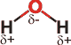

Water consists of small polar V-shaped molecules with molecular formula H2O
 Water's molecular vibrations
and absorptions
Water's molecular vibrations
and absorptions
 Water's lone pairs
Water's lone pairs
 Water electronic structure
Water electronic structure
 Water models
Water models
 Water reactivity
Water reactivity
'Water is H2O, hydrogen two parts, oxygen one, but there is also a third thing, that makes it water and nobody knows what it is. '
Water is a tiny bent molecule with the molecular formula H2O, consisting of two light hydrogen atoms attached to each 16-fold heavier oxygen atom. Each molecule is electrically neutral but polar, with the center of positive and negative charges located in different places. Each hydrogen atom has a nucleus consisting of a single positively-charged proton surrounded by a 'cloud' of a single negatively-charged electron. The oxygen atom has a nucleus consisting of eight positively-charged protons and eight uncharged neutrons surrounded by a 'cloud' of eight negatively-charged electrons. On forming the molecule, the ten electrons pair up into five 'orbitals', one pair closely associated with the oxygen atom, two pairs associated with the oxygen atom as 'outer' electrons, and two pairs forming each of the two identical O-H covalent bonds.
The eight outer electrons are often shown as the pairs of dots in
where the pairs of electrons between the O and H atoms represent the O-H covalent bonds, and the other two pairs of electrons represent the so-called 'lone pairs'. These electron pairs form electron 'clouds' that are spread out approximately tetrahedrally around the oxygen nucleus as they repel each other. This is the reason for water's bent structure. The eight positive charges in the (electronegative; Pauling electronegativity = 3.44) oxygen nucleus attract all these electrons strongly relative to the single positive charges on each hydrogen atom (Pauling electronegativity = 2.20). This leaves the hydrogen atoms partially denuded of electrons, and hence partially positively charged, and the oxygen atom partially negatively charged, that is,
.
Due to the presence of these charges and the bent nature of the molecule, the center of the positive charge (half way between the two hydrogen atoms) does not coincide with the center of the negative charge (on the oxygen atom). In liquid water, this gives a molecular dipole moment from the center of negative charge to the center of positive charge, equivalent to a unit negative charge (that is, one electron) separated from a unit positive charge by 0.061 nm. The presence of this dipole moment in all water molecules causes its polar nature.
Water is much smaller than almost all other molecules. As a result, both liquid and solid water (ice) have high densities of molecules. One liter of water at room temperature (25 °C) weighs almost a kilogram (997 g) and contains about 33 million million million million molecules.
The molecule is V-shaped. It is often shown as or but is better represented as or even giving a more accurate idea of its rather rotund shape and indicating the charge (pink showing negatively charged surface and green showing positively charged surface).
In liquid water, the mean O-H length is about 0.097 nm, the mean H-O-H angle is about 106°, and the mean negative charge on the oxygen atom is about 70% of an electron with each hydrogen atom positively charged sharing the neutralizing charge. Individual water molecules will have different values for these parameters depending on their energy and surroundings. The opposite charges on the oxygen and hydrogen atoms cause different water molecules to attract each other. This attraction is particularly strong when the O-H bond from one water molecule points directly at a nearby oxygen atom in another water molecule, that is when the three atoms O-H O are in a straight line. This is called 'hydrogen-bonding' as the hydrogen atoms appear to hold on to both O atoms. This attraction between neighboring water molecules and the high density of molecules due to their small size produces a great cohesive effect within liquid water that is responsible for water's liquid nature at ambient temperatures.
Heavy water (D2O) has similar, but not identical, properties to H2O. The deuterium atom (D) is a stable isotope of hydrogen with a neutron alongside the proton in its nucleus, almost doubling its atomic mass.
Normally purified liquid water consists of a mixture of molecules [1377] and ions, including H2O, HDO (≈ 10−2 %), H3O+ and OH− (≈ 10−6 %), H2O2 (≈ 10−7 %), CO2 (≈ 10−4 %), O2 (≈ 10−4 %), and N2 (≈ 10−3 %). A 'standard' water (Vienna Standard Mean Ocean Water) has been proposed. The Vienna Standard Mean Ocean Water (VSMOW, now VSMOW2) is a purified salt-free water used as a standard water material for determining the physical properties of water. It is made by mixing purified oceanic waters. It contains 99.984 426 atom % 1H, 0.015 574 atom % 2H (D), 1.85 ˣ 10−15 atom % 3H (T; equivalent to about one disintegration min−1 mol−1 water), 99.76206 atom % 16O, 0.037 90 atom % 17O, and 0.200 04 atom % 18O [IAPWS]. Standard heavy water (D2O) has the same oxygen isotopic composition but with 100% deuterium and molar mass 20.027508 g mol−1 [IAPWS]. c It should be noted that, although water contains mostly H216O, the concentrations of other isotopologues may well be greater than the solutes of interest in solutions. a
'Pure liquid water', meaning consisting of just 1H216O molecules, only exists in computer simulations. Even 'just H2O' consists of a mixture of 'ortho' and 'para' forms. Avoiding this complexity, 'water' is normally taken to mean H2O molecules, without consideration over its magnetic state. H2O is also known as 'light water' with D2O being heavy water (D2O density = 111% H2O density at 25 °C) and T2O being super heavy water (T2O density = 122% H2O density at 25 °C). The properties of H2O, D2O, and T2O are different. Even though the amount of deuterium in commonly-found water is low (≈ 16 mM) the properties of such water are different to water containing protium (1H) only [2063]. The known isotopes of hydrogen and oxygen are 1H, 2H, 3H, 4H, 5H, 6H, 7H, 12O, 13O, 14O, 15O, 16O, 17O, 18O, 19O, 20O, 21O, 22O, 23O, 24O, but only 1H, 2H, 16O, 17O, and 18O are stable, the rest being radioactive. Therefore, there are nine stable isotopologues and (theoretically) 355 possible radioactive isotopologues. If the ortho-/para- magnetic spin states of hydrogen and deuterium are taken into account, there are 15 different stable forms of the water molecule that do exist in any sample of natural water.
Water molecules c are tiny, electrically neutral, and V-shaped with molecular formula H2O a and molecular diameter of about 2.75 Å. g Water is much smaller than almost all other molecules. For example, it has a smaller volume and is much lighter than the four other common atmospheric molecules, oxygen (O2), nitrogen (N2), argon (Ar), and carbon dioxide (CO2); the density of water vapor being just 62% the density of dry air [2215].
Despite 80% of the electrons in H2O being concerned with bonding, the three atoms do not stay together in the liquid state. The hydrogen atoms are continually exchanging between water molecules due to protonation/deprotonation processess. Both acids and bases catalyze this exchange. Even when at its slowest (at pH 7), the average time for the atoms in an H2O molecule to stay together is only about a millisecond. However, as this brief period is much longer than the timescales encountered during investigations into water's hydrogen bonding or hydration properties, water is usually treated as a permanent structure.
Water symmetry

Water molecules (H2O) are symmetric (point group C2ν) with two mirror planes of symmetry and a 2-fold rotation axis. The hydrogen atoms may possess parallel or antiparallel nuclear spin. The water molecule consists of two light atoms (H) and a relatively heavy atom (O). The approximately 16-fold difference in mass gives rise to its ease of rotation, and the significant relative movements of the hydrogen nuclei, which are in constant and significant relative movement even at a temperature of absolute zero (0 K).
Due to the relatively large positive charge on the oxygen atom nucleus (8+) and the closeness of its electrons, the oxygen atom attracts electrons much more strongly (i.e., is much more electronegative) than the hydrogen atoms (1+). This results in a charge transfer from the hydrogen atoms towards the oxygen atom and, hence, the polarity of the water molecule.
Note. This water cartoon does not represent its actual outline, which is more rotund (see below).
The water molecule is often described in school and undergraduate textbooks as having four, approximately tetrahedrally arranged, sp3-hybridized electron pairs, two of which are associated with covalent bonds to the hydrogen atoms leaving the two remaining lone pairs. In a perfect tetrahedral arrangement, the bond-bond, bond-lone pair, and lone pair-lone pair angles would all be 109.47°, and such tetrahedral bonding patterns are found in condensed phases such as hexagonal ice.
Lone pairs as smeared electric charge
However, Ab initio calculations on isolated molecules do not confirm the presence of significant directed electron density where lone pairs are expected. The negative charge is more evenly smeared out along the line between where these lone pairs would have been expected and lie closer to the center of the O-atom than the centers of positive charge on the hydrogen atoms (as left).
Water electrostatic potential
Early 5-point molecular models, with an explicit negative charge where the lone pairs are purported to be, fared poorly in describing hydrogen bonding, but more recent models show some promise. Although there is no apparent consensus [116], such descriptions of substantial sp3-hybridized lone pairs in the isolated water molecule should perhaps be avoided [117], as an sp2-hybridized structure (plus a pz orbital) is indicated. This rationalizes the formation of (almost planar) trigonal hydrogen-bonding that can be found around some restricted sites in the hydration of proteins and where the numbers of hydrogen bond donors and acceptors are unequal. However, the debate has not ended there. It has been shown by analyszing the 30-dimensional antisymmetrized wavefunction that the lone-pair viewpoint is completely consistent with both the experimental results and the calculated wavefunction [3958]. From this .it is proposed that the electron-paired lobes look more like 'koala ears' (more flattened but rounded) than 'rabbit ears' (more extended and directional.
Shown opposite is the electrostatic potential associated with the water structure. Although the lone pairs of electrons do not appear to give distinct directed electron density in isolated molecules, there are minima in the electrostatic potential in approximately the expected positions; approximately tetrahedrally placed 1.22 Å out [2137]. The use of minima in such molecular electrostatic potential has been proposed in the definition of lone pairs [2137].
Water charge distribution
Note that the average electron density around the oxygen atom is about 10x that around the hydrogen atoms.
Approximate shape and charge distribution of water
The electron density distribution for water is shown above right with some higher density contours around the oxygen atom omitted for clarity. As the positive and negative charge centers lie in different places, the molecule is polar with a dipole moment. The polarizability of the molecule is almost isotropic, centered around the O-atom (1.4146 Å3), with only small polarizabilities centered on the H-atoms (0.0836 Å3) [736]. Parameters using ab initio calculations with the 6-31G** basis set are shown right. b For an isolated H216O, H217O or H218O molecule, the more exact calculated O-H length is 0.957854 Å, and the H-O-H angle is 104.500° (D216O, 0.957835 Å, 104.490°) [836]. The charge distribution depends significantly on the atomic geometry and the method for its calculation, but is likely to be about -0.7e on the O-atom (with the equal but opposite positive charge equally divided between the H-atoms) for the isolated molecule [778]. d
Energy diagram for water's bend and stretch
The experimental values for gaseous water molecules are O-H length 0.95718 Å, H-O-H angle 104.474° [64]. These parameters are the thermodynamically most stable, but the bonds exhibit vibrations away from these values. The energy diagrams and the zero-point vibrational energies (ν = 0) are given left.h The actual values depend on the vibrational state of the molecule, with even values of 180° being attainable during high order bend vibrations (v2 >= 7, λ < 900 nm) for the H-O-H angle [860]. Vibrations are asymmetric around the mean positions. In the ground state, the bond angle (104.5°) is much closer to the tetrahedral angle than that of the other Group VI hydrides, H2S (92.1°), H2Se (91°) or H2Te (89°).
These values are not maintained in liquid water, where ab
initio (O-H length 0.991 Å, H-O-H angle 105.5°
[90]) and diffraction
studies (O-H length 1.01 Å, O-D length 0.98 Å [1485]; O-H length 0.990 Å, O-D length 0.985 Å [1884]; O-D length 0.970 Å, D-O-D angle 106°
[91]) f suggest slightly
greater values, which are caused by the hydrogen-bonding
weakening the covalent bonding and reducing the repulsion between the electron orbitals. These bond lengths and angles
are likely to change, due to polarization shifts, in different
hydrogen-bonded environments and when the water molecules
are bound to solutes and ions. Thermal energy at 25 °C (2.478 kJ ˣ mol−1) would allow variation of the O-H lengths and H-O-H angles of 0.937 Å to 0.981 Å and 98° to 111° respectively. Commonly used molecular
models use O-H lengths of between 0.957 Å and 1.00 Å, and H-O-H angles of 104.52° to 109.5°. [Back to Top  ]
]
The molecule H2O has ten electrons associated, eight from the oxygen atom and one each from the two hydrogen atoms. Its electronic structure has been proposed as 1sO2.00 2sO1.82 2pxO1.50 2pzO1.12 2pyO2.00 1sH10.78 1sH20.78 [71], with the inner 1sO pair of electrons unhybridized. However, it now appears that the 2s orbital may also be effectively unhybridized with the bond angle expanded from the (then) expected angle of 90° due to the steric and ionic repulsion between the partially positively charged hydrogen atoms (as proposed by Pauling over 50 years ago [99]). The molecular orbitals of water, (1a1)2(2a1)2(1b2)2(3a1)2(1b1)2(4a1)0(2b2)0 are shown on another page.
Van der Waals radii [206]
The mean van der Waals diameter of water has been reported as identical to that of isoelectronic neon (2.82 Å) [112]. Molecular model values and intermediate peak radial distribution data indicate, however that it is somewhat greater (≈ 3.2Å). However, the molecule is clearly not spherical with about a ±5% variation in van der Waals diameter dependent on the axis chosen; approximately tetrahedrally placed slight indentations being apparent opposite the (putative) electron pairs. The H-O···O angle (0°) shown here (representing non-hydrogen-bonded close-packed water molecules) has been found by neutron diffraction in liquid water as a minor arrangement [2405].
A novel state of the water molecule has been described where single molecules sit within the voids in the beryl crystal, and hydrogen atoms are spread into rings (see elsewhere) [2547]. [Back to Top  ]
]
Simplified models for the water molecule have been developed to agree with particular
physical properties (for example, agreement with the critical
parameters). However, they are not robust and resultant data
are often very sensitive to the precise model parameters [206].
Models are still being developed and are generally more complex
than earlier, but they still appear to have poor predictive
value outside the conditions and physical parameters for which
they were developed. [Back to Top  ]
]
Although not often perceived as such, water is a very reactive molecule available at a high concentration. This reactivity, however, is greatly moderated in the liquid at ambient temperatures due to the extensive hydrogen bonding. Water has a remarkable range of reactivity. It can act as an acid or a base, an oxidant or a reductant, or a catalyst; for example,
as an oxidant Na°(s) + H2O(l)  Na+ + ½H2 + OH−
Na+ + ½H2 + OH−
as a reductant 4 Co3+(aq) + 6 H2O(l)  4 Co2+(aq) + O2(g) + 4 H3O+(aq)
4 Co2+(aq) + O2(g) + 4 H3O+(aq)
as an acid NH3(aq) + H2O(l)  NH4+(aq) + OH−(aq)
NH4+(aq) + OH−(aq)
as a base HF(aq) + H2O(l)  F−(aq) + H3O+(aq)
F−(aq) + H3O+(aq)
as a catalyst iron 2 Fe(s) + O2(aq) + 2 H2O(l)  2 FeO.H2O(s)
2 FeO.H2O(s)
4 FeO.H2O(s) + O2(aq) + 2 H2O(l)  2 Fe2O3.3H2O(s) damp rust
2 Fe2O3.3H2O(s) damp rust
Fe2O3.3H2O(s)  2 Fe2O3 + 3 H2O(g) dry rust
2 Fe2O3 + 3 H2O(g) dry rust
Water molecules each possess a strongly nucleophilic oxygen atom that enables many of life‘s reactions, as well as dissociating to produce reactive hydrogen ions and hydroxide ions. Reduction of the hydrogen bonding at high temperatures, or due to electromagnetic fields, results in greater reactivity of the water molecules.
This reactivity is particularly noted in the gas phase within our atmosphere, where water molecules are significant reactants, complexing agents, surface-active reagents, and catalysts [3063]. The water molecule is also a catalyst of many reactions, often where one water molecule acts as a nucleophile while one or several others act as general bases [3349]. In general, reactions involving D2O occur more slowly than those involving H2O. [Back to Top  ]
]
a It has been suggested that H1.5O may better reflect the formula at very small (attosecond) timescales when some of the H-atoms appear invisible to neutron and electron interaction [515]. This ratio has been used in support of Polack's EZ-water hypothesis. The experimental results have since been questioned [630], and described as erroneous [796]. However, they have been confirmed and thought due to a failure of the Born-Oppenheimer approximation (this assumes that the electronic motion and the nuclear motion in molecules can be separated) [1134]. Thus the formula H1.5O is incorrect, but such suggestions do add support to the view that observations concerning the structure of water should be tempered by the timescale used. In charged droplets, the water formula may be given as between H2.00000000045 Oδ+ and H1.999 999 9986 Oδ- [2661]. [Back]
b More exact parameters are given in the text. These parameters are given mainly for comparison with the hydrogen and hydroxide ions. In reality, no distance or angle is exact as the molecules are not rigid structures and are vibrating. [Back]
c With stocks of VSMOW being used up, they have been succeeded by VSMOW2, a standardized artificial pure salt-free water isotopic mixture made to deliver the same isotopic concentrations. Two other standard water preparations exist GISP (Greenland Ice Sheet Precipitation, 0.01246 atom % 2H, 0.03313 atom % 17O, 0.1522 atom % 18O) and SLAP (Standard Light Antarctic Precipitation, 0.00905 atom % 2H, 0.02707 atom % 17O, 0.0929 atom % 18O). Standard seawater (containing many different salts) and its thermodynamic properties are described elsewhere [1452]. [Back]
Atomic charges of the first row hydrides

d The charges on the hydrogen atoms across the periodic table are shown opposite on mousing over [820]. The hydrogen atom charges are blue, and the charges on the other atoms are indicated red. [Back]
f The H-O-H angle and O-H bond length in ice Ih are reported as 106.6°±1.5° and 0.985 Å [717] respectively, whereas modeling gives H-O-H angle values of 108.4°±0.2° for ice Ih and 106.3°±4.9° for water [1028]. The values for the various ices are given elsewhere [3869]. [Back]
g The atomic diameter can be determined from interpolation of the effective ionic radii of the isoelectronic ions (from crystal data) of O2− (2.80 Å), OH− (2.74 Å), and H3O+ (2.76 Å) [1167]. Coincidentally, this diameter is similar to the length of a hydrogen bond. The water molecule (bond length 0.96 Å) is smaller than ammonia (bond length 1.01 Å) or methane (bond length 1.09 Å), with only H2 (bond length 0.74 Å) and HF (bond length 0.92 Å) being smaller molecules. [Back]
f The energies of the H-O-H angles (93.01° to 116.51° ) and O-H bond lengths (0.915 Å to 1.005 Å) have been calculated at the CCSD(T)/aug-cc-PV6Z22 level of theory [3869]. [Back]
Home | Site Index | ortho- and para-water | Easier introduction | Water vibrations | H2O orbitals | Water dimer | LSBU | Top
This page was established in 2020 and last updated by Martin Chaplin on 5 November, 2021